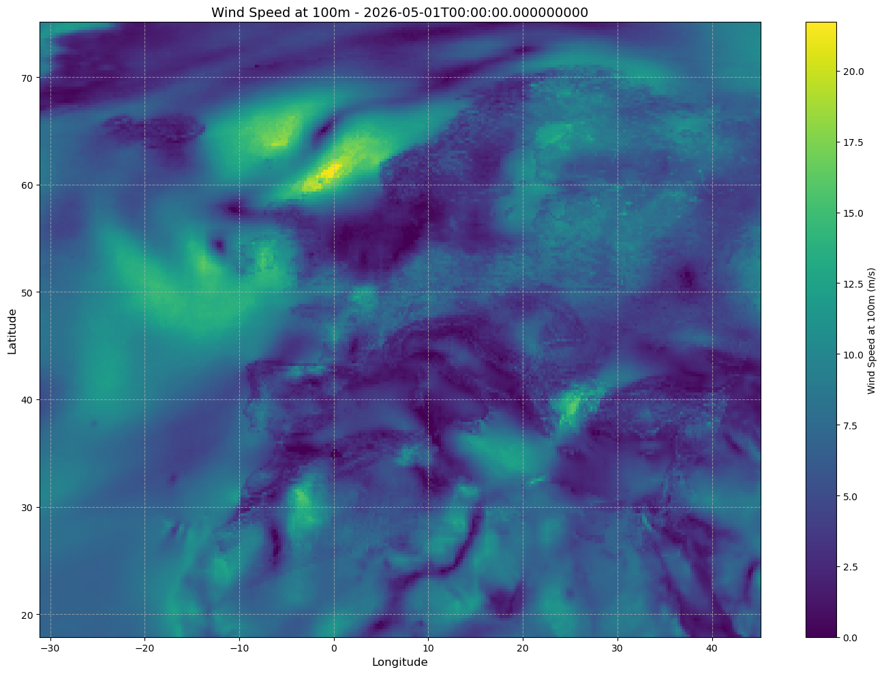
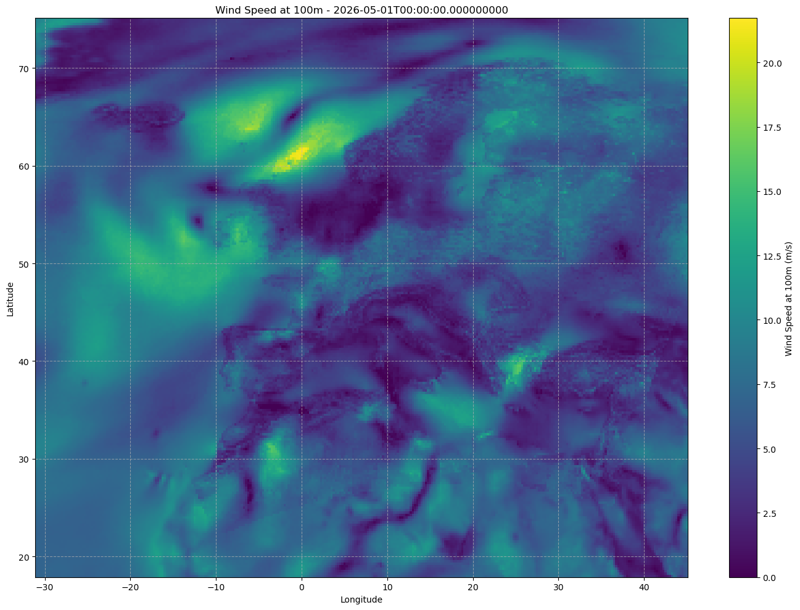
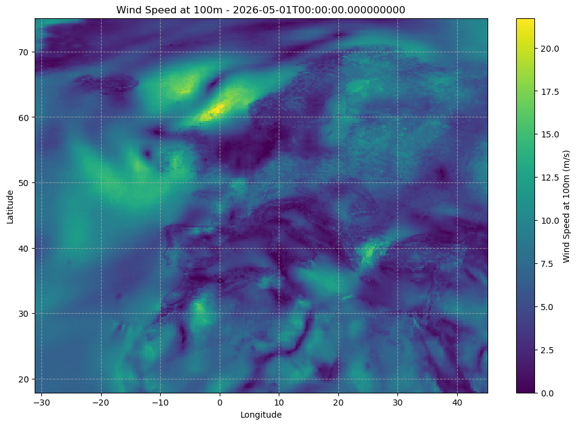

Data exploration#
%reload_ext autoreload
%autoreload 2
import sys
sys.path.append('../')
import numpy as np
import matplotlib
import matplotlib.pyplot as plt
import xarray as xr
import plotly
import netCDF4 as nc
import os
data_source = '../demo_data/'
data_files = os.listdir(data_source)
netcdf_file = nc.Dataset(data_source + data_files[0], 'r')
print("File format: ", netcdf_file.file_format)
print("File dimensions: ", netcdf_file.dimensions)
print("File variables: ", netcdf_file.variables)
print("File global attributes: ", netcdf_file.__dict__)
File format: NETCDF4
File dimensions: {'time': "<class 'netCDF4.Dimension'>": name = 'time', size = 744, 'latitude': "<class 'netCDF4.Dimension'>": name = 'latitude', size = 229, 'longitude': "<class 'netCDF4.Dimension'>": name = 'longitude', size = 305}
File variables: {'time': <class 'netCDF4.Variable'>
int64 time(time)
units: hours since 1900-01-01
calendar: proleptic_gregorian
unlimited dimensions:
current shape = (744,)
filling on, default _FillValue of -9223372036854775806 used, 'latitude': <class 'netCDF4.Variable'>
float32 latitude(latitude)
_FillValue: nan
units: degrees_north
long_name: latitude
unlimited dimensions:
current shape = (229,)
filling on, 'longitude': <class 'netCDF4.Variable'>
float32 longitude(longitude)
_FillValue: nan
units: degrees_east
long_name: longitude
unlimited dimensions:
current shape = (305,)
filling on, 'height': <class 'netCDF4.Variable'>
float64 height()
_FillValue: nan
unlimited dimensions:
current shape = ()
filling on, 'ws100': <class 'netCDF4.Variable'>
int16 ws100(time, latitude, longitude)
_FillValue: -32767
coordinates: height
add_offset: 20.669057846069336
scale_factor: 0.0006308080890578446
unlimited dimensions:
current shape = (744, 229, 305)
filling on}
File global attributes: {}
for file in data_files:
netcdf_file = nc.Dataset(data_source + file, 'r')
print("===============================")
for var_name, dimension in netcdf_file.variables.items():
print("Variable name: ", var_name)
print("Variable dimensions: ", dimension.dimensions)
print("Variable attributes: ", dimension.__dict__)
print("Variable shape: ", dimension.shape)
print("Variable data type: ", dimension.dtype)
netcdf_file.close()
# print("Variable data: ", dimension[:])
# print("\n")
# try:
# print("Sample data: ", dimension[:5])
# except:
# print("No sample data available.")
===============================
Variable name: time
Variable dimensions: ('time',)
Variable attributes: {'units': 'hours since 1900-01-01', 'calendar': 'proleptic_gregorian'}
Variable shape: (744,)
Variable data type: int64
Variable name: latitude
Variable dimensions: ('latitude',)
Variable attributes: {'_FillValue': nan, 'units': 'degrees_north', 'long_name': 'latitude'}
Variable shape: (229,)
Variable data type: float32
Variable name: longitude
Variable dimensions: ('longitude',)
Variable attributes: {'_FillValue': nan, 'units': 'degrees_east', 'long_name': 'longitude'}
Variable shape: (305,)
Variable data type: float32
Variable name: height
Variable dimensions: ()
Variable attributes: {'_FillValue': nan}
Variable shape: ()
Variable data type: float64
Variable name: ws100
Variable dimensions: ('time', 'latitude', 'longitude')
Variable attributes: {'_FillValue': -32767, 'coordinates': 'height', 'add_offset': 20.669057846069336, 'scale_factor': 0.0006308080890578446}
Variable shape: (744, 229, 305)
Variable data type: int16
===============================
Variable name: time
Variable dimensions: ('time',)
Variable attributes: {'units': 'hours since 1900-01-01', 'calendar': 'proleptic_gregorian'}
Variable shape: (672,)
Variable data type: int64
Variable name: latitude
Variable dimensions: ('latitude',)
Variable attributes: {'_FillValue': nan, 'units': 'degrees_north', 'long_name': 'latitude'}
Variable shape: (229,)
Variable data type: float32
Variable name: longitude
Variable dimensions: ('longitude',)
Variable attributes: {'_FillValue': nan, 'units': 'degrees_east', 'long_name': 'longitude'}
Variable shape: (305,)
Variable data type: float32
Variable name: height
Variable dimensions: ()
Variable attributes: {'_FillValue': nan}
Variable shape: ()
Variable data type: float64
Variable name: ws100
Variable dimensions: ('time', 'latitude', 'longitude')
Variable attributes: {'_FillValue': -32767, 'coordinates': 'height', 'add_offset': 25.4459285736084, 'scale_factor': 0.0007765955128367332}
Variable shape: (672, 229, 305)
Variable data type: int16
===============================
Variable name: time
Variable dimensions: ('time',)
Variable attributes: {'units': 'hours since 1900-01-01', 'calendar': 'proleptic_gregorian'}
Variable shape: (744,)
Variable data type: int64
Variable name: latitude
Variable dimensions: ('latitude',)
Variable attributes: {'_FillValue': nan, 'units': 'degrees_north', 'long_name': 'latitude'}
Variable shape: (229,)
Variable data type: float32
Variable name: longitude
Variable dimensions: ('longitude',)
Variable attributes: {'_FillValue': nan, 'units': 'degrees_east', 'long_name': 'longitude'}
Variable shape: (305,)
Variable data type: float32
Variable name: height
Variable dimensions: ()
Variable attributes: {'_FillValue': nan}
Variable shape: ()
Variable data type: float64
Variable name: ws100
Variable dimensions: ('time', 'latitude', 'longitude')
Variable attributes: {'_FillValue': -32767, 'coordinates': 'height', 'add_offset': 29.608768463134766, 'scale_factor': 0.0009036430587540367}
Variable shape: (744, 229, 305)
Variable data type: int16
===============================
Variable name: time
Variable dimensions: ('time',)
Variable attributes: {'units': 'hours since 1900-01-01', 'calendar': 'proleptic_gregorian'}
Variable shape: (720,)
Variable data type: int64
Variable name: latitude
Variable dimensions: ('latitude',)
Variable attributes: {'_FillValue': nan, 'units': 'degrees_north', 'long_name': 'latitude'}
Variable shape: (229,)
Variable data type: float32
Variable name: longitude
Variable dimensions: ('longitude',)
Variable attributes: {'_FillValue': nan, 'units': 'degrees_east', 'long_name': 'longitude'}
Variable shape: (305,)
Variable data type: float32
Variable name: height
Variable dimensions: ()
Variable attributes: {'_FillValue': nan}
Variable shape: ()
Variable data type: float64
Variable name: ws100
Variable dimensions: ('time', 'latitude', 'longitude')
Variable attributes: {'_FillValue': -32767, 'coordinates': 'height', 'add_offset': 32.2571792602539, 'scale_factor': 0.0009844710755128458}
Variable shape: (720, 229, 305)
Variable data type: int16
===============================
Variable name: time
Variable dimensions: ('time',)
Variable attributes: {'units': 'hours since 1900-01-01', 'calendar': 'proleptic_gregorian'}
Variable shape: (744,)
Variable data type: int64
Variable name: latitude
Variable dimensions: ('latitude',)
Variable attributes: {'_FillValue': nan, 'units': 'degrees_north', 'long_name': 'latitude'}
Variable shape: (229,)
Variable data type: float32
Variable name: longitude
Variable dimensions: ('longitude',)
Variable attributes: {'_FillValue': nan, 'units': 'degrees_east', 'long_name': 'longitude'}
Variable shape: (305,)
Variable data type: float32
Variable name: height
Variable dimensions: ()
Variable attributes: {'_FillValue': nan}
Variable shape: ()
Variable data type: float64
Variable name: ws100
Variable dimensions: ('time', 'latitude', 'longitude')
Variable attributes: {'_FillValue': -32767, 'coordinates': 'height', 'add_offset': 25.50716590881348, 'scale_factor': 0.0007784644420684087}
Variable shape: (744, 229, 305)
Variable data type: int16
data = xr. open_dataset(data_source + data_files[0])
print(data)
<xarray.Dataset> Size: 416MB
Dimensions: (time: 744, latitude: 229, longitude: 305)
Coordinates:
* time (time) datetime64[ns] 6kB 2026-05-01 ... 2026-05-31T23:00:00
* latitude (latitude) float32 916B 75.0 74.75 74.5 74.25 ... 18.5 18.25 18.0
* longitude (longitude) float32 1kB -31.0 -30.75 -30.5 ... 44.5 44.75 45.0
height float64 8B ...
Data variables:
ws100 (time, latitude, longitude) float64 416MB ...
from matplotlib.colors import TwoSlopeNorm
# Load your dataset
# data = xr.open_dataset('your_file.nc')
# Create a better visualization of a single time slice
plt.figure(figsize=(14, 10))
# Select a specific time (e.g., first time step)
time_index = 0
time_slice = data.ws100.isel(time=time_index)
# Get the data for plotting
lons = data.longitude.values
lats = data.latitude.values
wind_data = time_slice.values
# Create a nice colormap
cmap = plt.cm.viridis
# Plot as an image
im = plt.pcolormesh(lons, lats, wind_data, cmap=cmap, shading='auto')
plt.colorbar(im, label='Wind Speed at 100m (m/s)')
# Add gridlines
plt.grid(True, linestyle='--', alpha=0.7)
# Add title and labels
plt.title(f'Wind Speed at 100m - {data.time.values[time_index]}', fontsize=14)
plt.xlabel('Longitude', fontsize=12)
plt.ylabel('Latitude', fontsize=12)
# Improve the appearance
plt.tight_layout()
plt.show()
# You can also create an animation without cartopy
from matplotlib.animation import FuncAnimation
fig, ax = plt.figure(figsize=(14, 10)), plt.axes()
ax.grid(True, linestyle='--', alpha=0.7)
# Initial plot with first time step
im = ax.pcolormesh(lons, lats, data.ws100.isel(time=0).values,
cmap=cmap, shading='auto')
fig.colorbar(im, ax=ax, label='Wind Speed at 100m (m/s)')
title = ax.set_title(f'Wind Speed at 100m - {data.time.values[0]}')
ax.set_xlabel('Longitude')
ax.set_ylabel('Latitude')
# Update function for animation
def update(frame):
im.set_array(data.ws100.isel(time=frame).values.flatten())
title.set_text(f'Wind Speed at 100m - {data.time.values[frame]}')
return [im]
# Create animation (use fewer frames for speed)
anim = FuncAnimation(
fig, update, frames=range(0, len(data.time), 24), # Every 24 hours
blit=True
)
plt.tight_layout()
plt.show()


import xarray as xr
import numpy as np
import matplotlib.pyplot as plt
import ipywidgets as widgets
from IPython.display import display
from matplotlib.backends.backend_nbagg import FigureCanvasNbAgg
# Make sure matplotlib uses the right backend
%matplotlib inline
# Assuming you have data loaded
# Take only the first 5 time steps
subset_data = data.isel(time=slice(0, 48))
# Create figure and initial plot
fig, ax = plt.subplots(figsize=(12, 8))
# Get the longitude and latitude values
lons = data.longitude.values
lats = data.latitude.values
# Initial plot with first time step
wind_data = subset_data.ws100.isel(time=0).values
im = ax.pcolormesh(lons, lats, wind_data, cmap='viridis', shading='auto')
cbar = fig.colorbar(im, ax=ax, label='Wind Speed at 100m (m/s)')
# Add gridlines
ax.grid(True, linestyle='--', alpha=0.7)
ax.set_xlabel('Longitude')
ax.set_ylabel('Latitude')
title = ax.set_title(f'Wind Speed at 100m - {subset_data.time.values[0]}')
# Create time slider widget
time_slider = widgets.IntSlider(
value=0,
min=0,
max=47, # 5 time steps (0-4)
step=1,
description='Time step:',
continuous_update=False,
layout=widgets.Layout(width='800px')
)
# Time step labels for the slider
time_labels = {i: str(time.values) for i, time in enumerate(subset_data.time)}
time_label = widgets.Label(value=time_labels[0])
# Function to update plot when slider changes
def update_plot(change):
time_idx = change['new']
wind_data = subset_data.ws100.isel(time=time_idx).values
# Update the plot data
im.set_array(wind_data.flatten())
# Update colorbar limits if needed
vmin = wind_data.min()
vmax = wind_data.max()
im.set_clim(vmin, vmax)
# Update title with timestamp
title.set_text(f'Wind Speed at 100m - {subset_data.time.values[time_idx]}')
# Update the time label
time_label.value = time_labels[time_idx]
fig.canvas.draw_idle()
# Register the callback
time_slider.observe(update_plot, names='value')
# Create a play button for animation
play_button = widgets.Play(
value=0,
min=0,
max=47,
step=1,
interval=1000, # milliseconds between frames
description="Play",
disabled=False
)
# Link the play button to the slider
widgets.jslink((play_button, 'value'), (time_slider, 'value'))
# Layout the controls
controls = widgets.HBox([play_button, time_slider])
display(controls)
display(time_label)
plt.show()
